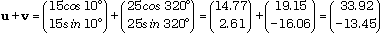
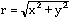
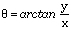
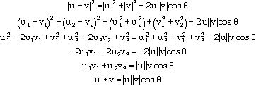
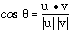

Vectors were introduced in chapter 5 as one-dimensional arrays. The simplest applications for vectors are motivated by representing them geometrically as arrows on a coordinate system.
Thus the length-2 vector is represented by an arrow with its initial point at the origin and terminating at the point (i, j).
Notice that the vector can be completely determined by specifying either the rectangular coordinates (i, j), or the polar coordinates (r, ) where r is the length of the vector, and is the angle it makes with the positive x-axis.
In most, if not almost all applications employing vectors, it is the latter representation that best abstracts the data.
1. A current of 15 km/h from the Northwest.
2. A wind of 80 km/h from the Southeast.
3. A force of 15 Newtons at 45° to the x-axis.
4. A car going 80 km/h East.
5. A vertical velocity of 20 m/s.
6. A plane travelling 1000 km/h on a 180 heading.
A vector is any quantity measured with both a length and a direction. The length r of the vector is also called the magnitude, modulus or absolute value, and the direction is the argument.
A quantity that has only a magnitude but no direction is called a scalar.
The examples of vectors given above are inconsistent, in that some have the direction they point from and others the direction to. For consistency, actual computations are always done with the direction to which the vector points, and this is measured counterclockwise from the positive x-axis, which is identified with East. (Note that headings or bearings are by convention measured from North at 000 clockwise to 359 and must be translated into the standard system for computations.)
Thus the above examples would be translated into the standard measurement system as: (radian measure in parentheses )
1. 15 km/h at 315° (7¼/4)
2. 80 km/h at 135° (3¼/4)
3. 15 Newtons at 45° (¼/4)
4. 80 km/h at 0° (0)
5. 20 m/s at 90° (¼/2)
6. 100 km/h at 270° (3¼/2)
Thinking about an ADT Vector for a moment, it ought to be clear that there are similarities to the type Point discussed in section 6.9. Assignment of a pair of numbers to an abstract vector and the extraction of components (these are called projections onto the axes) are both required to maintain the abstract nature of the type. Extraction of the length (absolute value, denoted |v|) and angle (argument) as well as the construction of a vector from this information are also required. Most of the translations defined on the ADT Point are not used with vectors, however. The exceptions are:
1. reflection in the origin, and this is termed negation as it results in a vector with the same length but the opposite direction, and
2. scaling the vector, which is termed scalar multiplication.
There are other operations required on vectors that are not appropriate for the type Point:
Addition:
The first operation is motivated by the desire to determine the net effect of the two vectors of a similar kind acting simultaneously.
What single force is the equivalent of the two forces 15N at 10° above the positive x-axis and 25N at 40° below the positive x-axis?
Algebraically, the net forces in the x-direction are ux+ vx and in the y-direction are uy +vy.
Geometrically, this can be expressed by sliding one of the vectors until its origin becomes the head of the other, and thinking of the two as being in some sense "successive". The sum of the vectors is the diagonal of the triangle formed.
The order in which this is done is irrelevant, so that (u + v) = (v + u). That is, this operation is commutative, and the sum can also be thought of as the diagonal of a parallelogram.
An alternate labelling of the diagram shows the correspondence between the algebraic and geometric views of addition.
The sum of two vectors u and v is the vector formed from summing the corresponding components of u and v.
The solution to the specific question posed above is therefore the vector:

If this is converted into the conventional (r, ) notation using  and  the result can be expressed as a force of 36.4N at 21.6° below the positive x-axis.
Subtraction:
As in arithmetic, subtraction is a short-cut for adding the opposite, that is, u - v = u + (-v). Since negation has already been postulated as an operation on an ADT Vector, no further algebra is necessary. Geometrically, since u = v + (u - v), the difference u - v between two vectors produces the arrow from the endpoint of first to the endpoint of the second. (The diagram is drawn with u as the resultant.)
Multiplication:
The only multiplication operation defined on two dimensional vectors is the dot product, given by u · v = u1v1 + u2 v2. (On three dimensional vectors, there is another multiplication called cross product.) Here, the corresponding components are multiplied and summed. Since the result is a single number, and not a vector (it has magnitude but not direction), this result is also known as the scalar product.
By their very nature, vectors are more often abstracted using polar representation than using rectangular representation. Addition must be done with the rectangular coordinates, but the resultant is almost always expressed in polar form, to correspond with the form in which the addends have been given.
However, there are calculations that can be done in either rectangular or polar coordinates, as convenient, and the dot product is one of these. Refer to figure 7.9 above and suppose q is the angle between two vectors u and v. By the law of cosines;

This provides a way of computing the dot product from the lengths of the two vectors and the angle between them without using the rectangular coordinates. Alternately, since from this last line  the angle between two vectors could be calculated from their components without first obtaining the individual arguments as intermediate results.
This latter observation may be more useful in a client program than in a library module, but taking all the other ideas into consideration, the following interface can be constructed.
DEFINITION MODULE Vectors; TYPE Vector = ARRAY [0..1] OF REAL; PROCEDURE assignR (x, y : REAL) : Vector; (* returns the vector with the supplied parameters as rectangular components *) PROCEDURE assignP (abs, arg: REAL) : Vector; (* returns the vector with the supplied parameters as its length and argument *) PROCEDURE projectX (v : Vector) : REAL; (* returns the x-coordinate of v *) PROCEDURE projectY (v : Vector) :REAL; (* returns the y-coordinate of v *) PROCEDURE abs (v : Vector) : REAL; (* returns the length of the vector v *) PROCEDURE arg (v : Vector) : REAL; (* returns the angle between v and the x-axis *) PROCEDURE neg (v : Vector) : Vector; (* returns the vector with opposite components to v *) PROCEDURE scalarMult (v : Vector; scaleFactor: REAL ) : Vector; (* returns the vector that is scaleFactor times as long as v and in the same direction *) PROCEDURE add (u, v : Vector) : Vector; (* returns the vector sum of u and v *) PROCEDURE sub (u, v : Vector) : Vector; (* returns the vector difference u - v *) PROCEDURE dotProduct (u, v : Vector) : REAL; (* returns the scalar or dot product of the two vectors *) END Vectors.
At this point, it is necessary to make a decision about the meaning of representation of the type Vector. (The syntax has already been chosen, but the semantics and the implementation details have not yet.) Will the ordered pair stored contain the rectangular coordinates or the polar coordinates? So long as the client program will not be looking at these numbers directly, it may not matter in one sense. However, unlike the similar type Point discussed in section 6.9, vectors are more naturally thought of in polar terms (angle and length) than in rectangular ones (x and y-coordinates). Polar is therefore the best representation.
With this much of the work done, however, and all the important decisions made, the production of the implementation part of the module and a test harness to solve vector problems is left as one of the exercises at the end of the chapter.